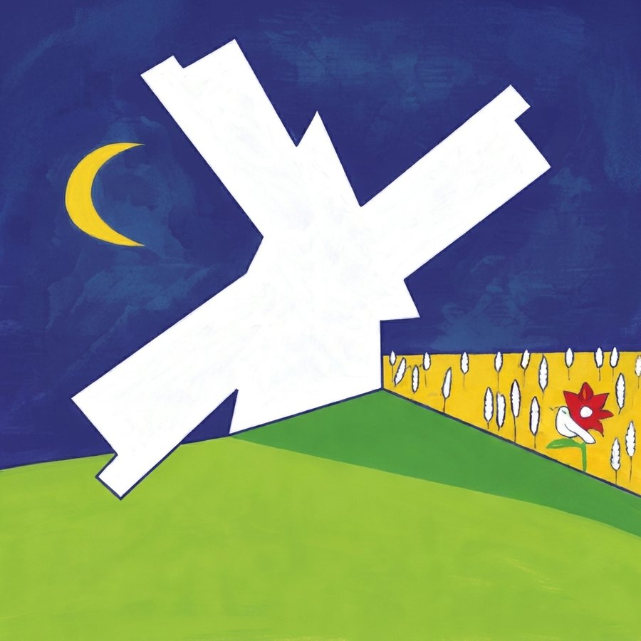

Vores historie
Fra mark til mel
Vi dyrker og maler vores korn på stenkværn i hjertet af Danmark. Hver pose mel bærer historien om jord, sol og omtanke.
Læs mereVi dyrker og maler vores korn på stenkværn i hjertet af Danmark. Hver pose mel bærer historien om jord, sol og omtanke.
Læs mere
